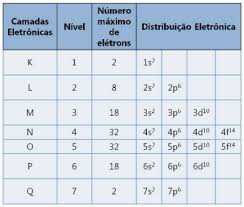
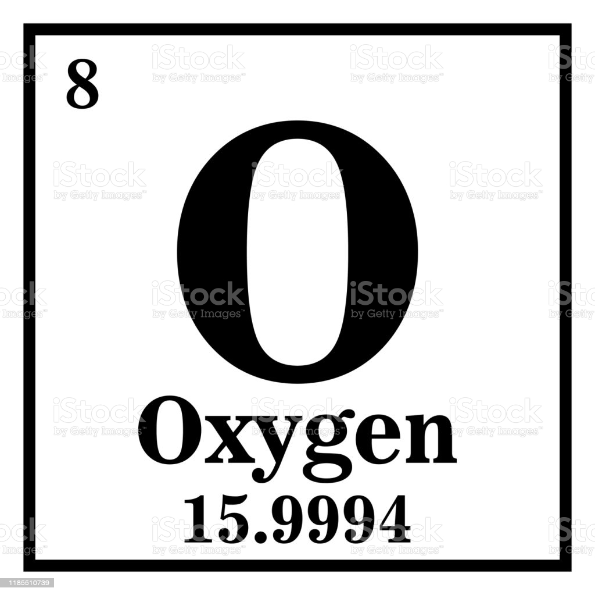

A tabela periódica é um modelo que agrupa todos os elementos químicos conhecidos e suas propriedades. Eles são organizados em ordem crescente de número atômico (número de prótons).
A nova tabela periódica tem um total de 118 elementos químicos (92 elementos naturais e 26 elementos artificiais).
Cada quadrado especifica o nome, símbolo e número atômico do elemento químico.
Os chamados Períodos são as linhas horizontais numeradas, que possuem elementos que apresentam o mesmo número de camadas eletrônicas, totalizando sete períodos.
1º Período: 2 elementos
2º Período: 8 elementos
3º Período: 8 elementos
4º Período: 18 elementos
5º Período: 18 elementos
6º Período: 32 elementos
7º Período: 32 elementos
A camada de valência é a última camada da distribuição atômica de elétrons. Por ser a camada mais externa, é também a camada mais distante do núcleo.
De acordo com a regra do octeto, a camada de valência requer oito elétrons para se estabilizar, portanto, o átomo ganha estabilidade quando possui 8 elétrons na camada de valência. Isso ocorre em gases raros, que possuem uma camada de valência completa. A única exceção é o elemento hélio com 2 elétrons.
Outros elementos precisam formar ligações químicas para receber os elétrons ausentes e alcançar os oito elétrons na camada de valência. os elétrons da camada de valência são os elétrons que participam da ligação porque são os mais externos.
Conforme o modelo atômico de Rutherford-Bohr, os elétrons giram ao redor do núcleo atômico, em diferentes camadas energéticas
Existem sete camadas designadas pelas letras K, L ,M, N, O, P e Q. Cada uma suporta um número máximo de elétrons.
A fim de determinar a camada de valência através da distribuição de elétrons, um diagrama de Linus Pauling é usado.
Lembre-se de que o diagrama de Pauling segue uma ordem crescente de energia. A última camada obtida na distribuição de elétrons é a camada de valência.
1s2 2s2 2p6 3s2 3p6 4s2 3d10 4p6 5s2 4d10 5p6 6s2 4f14 5d10 6p6 7s2 5f14 6d10 7p6
Oxigenio - O
 Número atômico: 8
Distribuição eletrônica: 1s2 2s2 2p4
Camada de valência: 2s2 2p4, o oxigênio tem 6 elétrons na camada de valência.